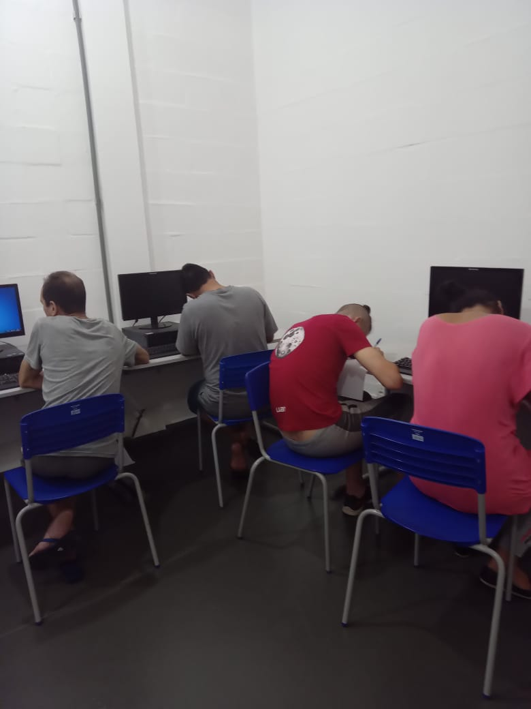

Um pouco sobre nós

"Tenho 41 anos sou homossexual , cumpro pena no regime fechado a 14 anos. O preconceito na sociedade perante aos homessexuais é muito grande, não é facil a vida, um grande desafio. Para um homosesexual apenado em regime fechado, os desafios , preconceitos são muitos maiores.Com o projeto de computação, nós sentimos mais valorizados e assim sairemos deste lugar com um diploma de um curso profissionalizante, abrindo no futuro muitas portas e oportunidades.Agradecemos a oportunidade e valorização de projetos como este." - Wagner
"Tenho 26 anos sou transsexual , faço parte da ala LGBTQI+, sou uma pessoa muito tranquila, sou mais na minha, porem as vezes sou mais extrovertida, converso bastante , as vezes meio estressada, meu humor varia , pois faço tratamento hormonal, me sinto muito bem resolvida , amo viver intensamente, sou e me tornei uma pessoa maravilhosa e tenho orgulho em ser diferente." - Agata
"Eu tinha muito medo de me assumir para minha família ,por medo do que eles iam falar.
Para mim a pouco tempo, há cerca de alguns meses foi quando me assumi de verdade; meu pai não gostou muito, mas respeitou a minha escolha.
Nesse momento, só tenho a agradecer a Deus pela família que ele me deu; desculpa, não curto muito escrever sobre a minha vida, então era isso;
Beijos.
" - Natacha
"Tenho 44 anos, sou gay assumido desde criança. Tive uma infância complicada e uma
adolescência turbulenta, até parar dentro do sistema prisional com uma pena de 20 anos
para cumprir.
Como não conhecia a vida por trás das grades, e até aprender como é a vida dentro
desse lugar, acabei cometendo vários erros e assim os anos passaram;
Sai para a rua sem expectativa de vida, acabei retornando, novamente para o sistema
prisional, mas com tantos erros tive que aprender e aprendi;
Hoje farei tudo diferente, com um olhar diferente para a vida lá fora;
Se fosse escrever tudo que tenho vontade, acredito que ocuparia 1000 folhas, mas uma
coisa que quero fazer é viver e ser feliz" - Joel